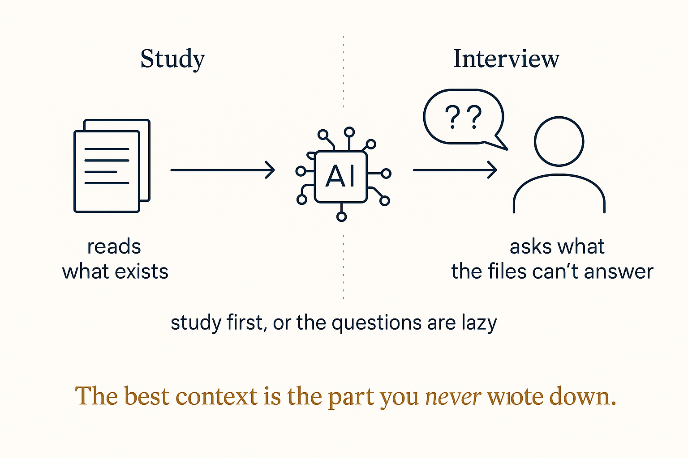

Reverse the roles before the work starts: the AI studies what exists, then asks you what it can't infer — the gaps it fills silently are where it fails.

The instinct is to write a better prompt. The structural move is to reverse the roles: before the work starts, make the AI extract the context from you. One sentence does it — "ask me everything you need to know before you start" — and each question it asks is a silent assumption converted into an explicit answer. The gaps you didn't fill are the gaps it would have filled by guessing, and guessing is where hallucination lives.
The recipe has two phases, and the order is load-bearing. First the AI studies what exists — your files, your history, your actual material — noting patterns you can't see yourself because you're inside them. Then it interviews, but only about what the material can't answer. Skip the study phase and the interview asks lazy questions you've already documented; skip the interview and the study fills its gaps with plausible fiction. Study makes the questions sharp; the interview makes the answers real.
The deeper point is about where the valuable context actually is. Any system's most important knowledge is the part that was never written down — the constraint everyone works around, the preference so obvious to you it never seemed worth stating, the reason behind the rule. No amount of reading extracts what isn't in the files, and no amount of prompting volunteers what you didn't think to say. An interview is the only extraction tool for undocumented context, which is why it beats a better prompt: the prompt can only contain what you remembered to include.
There's a compounding move hiding in it too: the interview's answers don't have to evaporate with the session. Route them into the standing structure — the context file, the preferences, the profile — and each interview permanently shrinks the territory the next one has to cover. The questions get more specific over time because the obvious ones are already answered on disk.